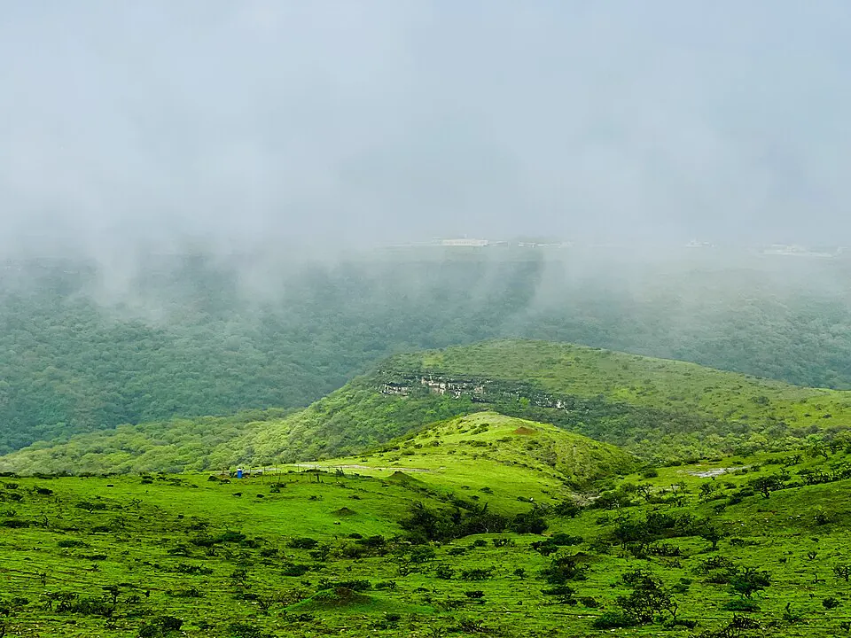
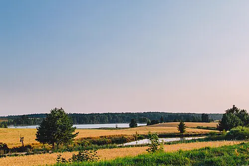
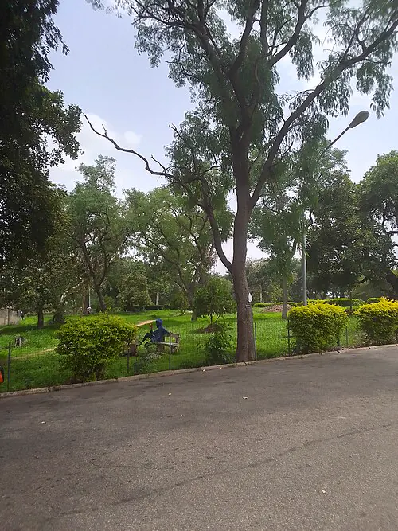
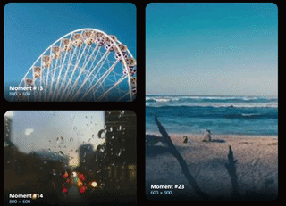

Reads images in every frame
Tags, srcset, CSS backgrounds, inline SVG and nested iframes, Shadow DOM included.
Imaget lists every image a page loads — srcset, CSS backgrounds, inline SVG and nested frames — filters it by size and type, then saves the set as one ZIP.
Free and open source under GPL-3.0, in 14 languages.
The side panel opens beside the page and lists what loaded: tags, srcset, CSS backgrounds, inline SVG and frames.

the-quiet-field-01.jpg1280 × 962 · 208 KBSelected
sky-sunny-night.webp1280 × 853 · 21 KBThumb
green-space.png500 × 667 · 93 KBThumbTags, srcset, CSS backgrounds, inline SVG and nested iframes, Shadow DOM included.
On six sites the panel swaps a thumbnail for the file behind it, at full size.
Width and height, PNG, JPG, WebP or GIF, plus keyword and exclude rules.
A floating button on any image above 128 px opens a preview, then saves it in place.

WebP by default, or JPG and PNG for older editors.
WebP{date}-{page_title}-{index}, or the file's own name.
One subfolder per page title, off by default.
OnBelow this, the panel skips it.
200 × 200 pxPixiv, X, Weibo, Reddit, Telegram and Discord. Every other site lists its images at the size the page loads.
To Downloads, or to a subfolder named after the page title when that rule is on.
Yes. It lists the page's images without the context menu.
No. Sniffing, conversion and ZIP packing run on your machine; there is no account.
Nothing. Imaget is open source under GPL-3.0, and the code is on GitHub.